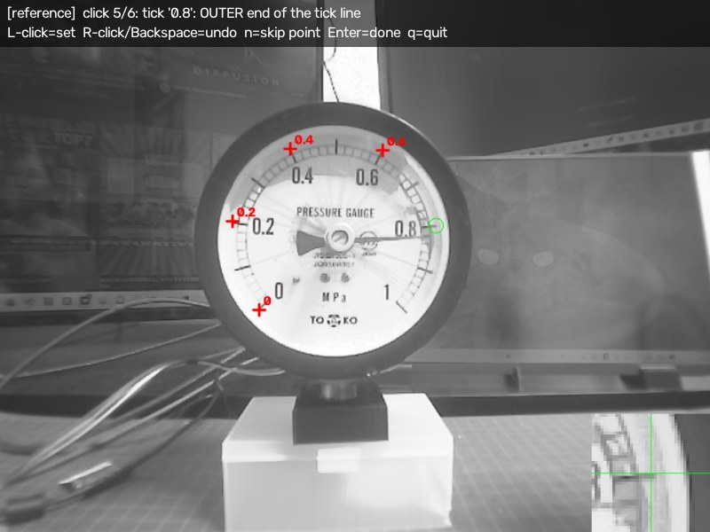
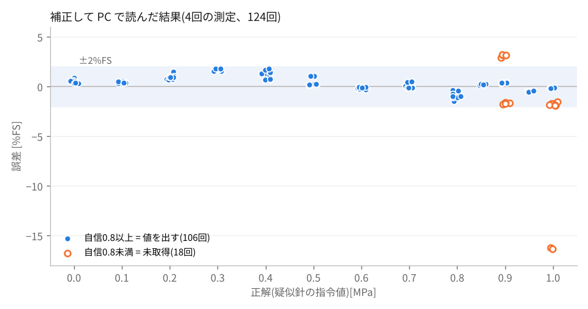

XIAO を固定するブラケットを作り替えたら、機械学習版がまったく読めなくなりました。/nn の位置合わせの一致度は 0.04 で、ほぼ一致していません。写り方を学習時と比べると、文字盤が右へ約55・下へ約70画素ずれ、約1.2倍に大きく写り、左右に約20°斜めになっていました。XIAO の位置合わせが直せるのは上下左右のずれ(±48画素まで)だけで、大きさと斜めは直せません。
困るのは、読めないだけでなく、自信ありげに間違うことです。学習データの画像を同じように変形して試すと、0.897MPa を 0.380MPa、自信 0.92 と読みました(下の図の真ん中)。XIAO は自信 0.8 以上なら値を出すので、この誤読はそのまま記録されます。
最初は、XIAO のライブ画像に学習時の基準画像を重ねて表示するツール(align_view.py)を作り、カメラを元の位置に戻そうとしました。しかし、上下・左右・前後の位置と、左右・上下の向き、回転の6つが連動するので、1つを合わせると別のものがずれます。手では合わせきれませんでした。
そこで、カメラを戻すのをやめ、画像のほうを学習時の見え方に戻すことにしました。文字盤は平面なので、文字盤の上の4点以上の対応が分かれば、射影変換で「学習時と同じ大きさ・同じ向き」の画像に直せます。対応する点は手でクリックします。

画像の特徴点を自動で対応づける方法(SIFT)も試しましたが、照明とひさしの影の違いで一致する点が7点しか取れず、使えませんでした。クリックは6点で1分ほどです。
つまずいたのは針の軸です。最初は軸の中心もクリックする点に入れていましたが、自信が 0.69 までしか上がりませんでした。軸のキャップは文字盤より手前に浮いているので、斜めから見ると文字盤の面からずれた位置に見えます。目盛り6点だけにすると、各点のずれは1画素以下になり、XIAO 実機の自信は 0.80〜0.91 に上がりました。

補正したまま、疑似圧力計を 0〜1.0MPa で動かして PC で測りました(4回、計124回の読み取り)。0〜0.85MPa はすべて自信 0.8 以上で、値を出した回の誤差は平均 0.65%FS、最大 1.82%FS でした。XIAO 実機でも、1.0MPa を 0.994・0.995 と読めています。

残った課題もあります。
機械学習版を自分の環境で使うとき、いちばん手間がかかったのは、学習したときとカメラの位置がずれることでした。収集のあとでカメラを動かしてしまったら、集め直す前にこの補正を試してください。手順はリポジトリの docs/ALIGNMENT.md に画像付きでまとめ、全部のコードの用途は docs/GUIDE.md に一覧にしました。使うコマンドは次の3つです(05_ml フォルダで実行)。
python hom_check.py --xiao http://192.168.11.5
python hom_check.py --xiao http://192.168.11.5 --needle COM8 --per 3
python hom_check.py --xiao http://192.168.11.5 --upload1行目はクリックして PC で読み取りを確かめる、2行目は疑似圧力計で誤差を測る、3行目は XIAO に変換を送るコマンドです。カメラをまた動かしたら、--redo を付けて今の画像の6点だけクリックし直し、もう一度 --upload します。